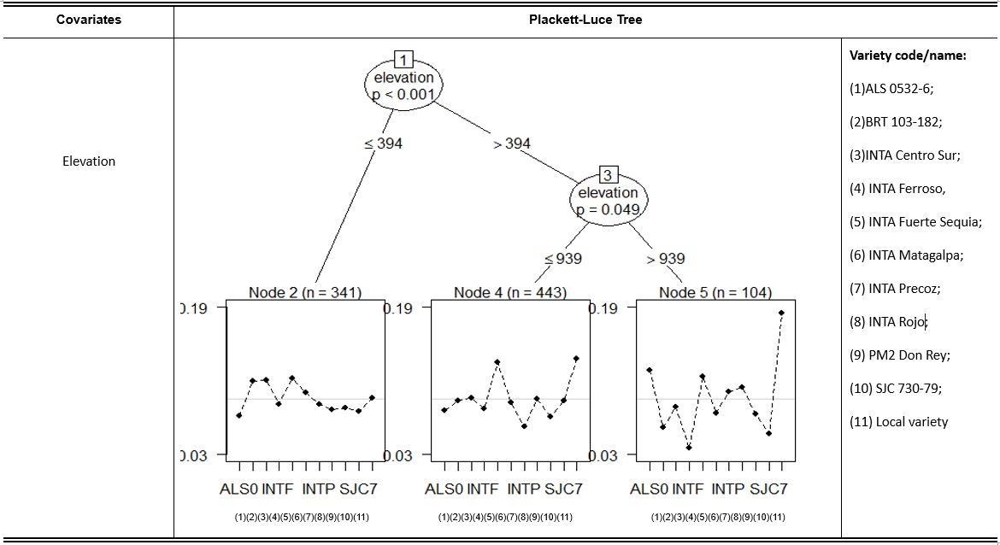

Meng Zhang
MSc graduate Geo-Information Science in Wageningen University & Research

Profile
A recent graduate student has professional experience with remote sensing, GIS and data analytics. Master both scripting environments (R,Python) and dedicated GIS platforms. Own skills with regards to large scale dataset (vector, raster, 3D point cloud data) analyzation. Extremely familiar with digital map creation and visualization. Processes good communication skills. Always been a fast and motivated learner. Aiming to find a starting point which has great learning opportunity and exciting challenge as GIS specialist.
Education & Experiences
Master degree
09/2017-09/2019Wageningen University & Research –Geo-information Science(GIS)
Main courses:
- Python
- Remote Sensing
- Geo-scripting (R)
- Advanced earth observation
- Spatial modelling & statistics (R, buidling model)
- Geo-tools (ArcGIS)
- Advanced GIS
- GIS in context
- Academic Consultancy Training (ACT)
Internship
05/2019-09/2019:
Topic: Accuracy assessment and improvement of tree localization algorithm
Supervisor: Smart Farm Sensing. B.V Laurens xxx
The company desires to automate the detection of the tree geo-location by integrating GIS data, for instance from aerial photographs and satellite images. It is essential to examine how well the algorithm functions and how the algorithm can be incorporated for company future usage. A testing algorithm (TSVD) is created for examining the accuracy of SVD algorithm. The practical step by step instructions is presented so that the company can use the SVD algorithm. Results of this research show that SVD algorithm can bring nearly 85% accuracy of detected points in the farms which are regularly planted with young and medium grown trees. For farms with a regular planted pattern but with dense and mature plants, the algorithm can currently reach 50% accuracy. The report also reveals that by using TSVD at a small sample area first, and then apply the resulting outcome into larger study area, is an efficient and applicable way for the company to deal with projects from large farms/organization in the future.
Thesis
09/2018-04/2019:
Topic: Spatial Analysis and Visualization of Triadic Crop Variety Traits in Central America
supervisor: Sytze de bruin
Abstract
A rapid increase in population, urbanization, and climate change has put huge pressures on all aspects of society, and in particular agriculture. These pressures lead to a massive demand of agriculture products which is increasingly difficult to meet due to climate change, or more specifically the challenges climate change introduces to farmers. Seeds for Needs is a global initiative from the Bioversity International Research Center which is aiming to help farmers adapt better to climate change through the use of agriculture biodiversity. The method employed by this Seeds for Needs initiative is called ‘Tricot’ (Triadic Comparisons of Technologies) and consists of a farm-specific comparisons between three randomly-assigned crop varieties (sampled from a large set) which are then also compared to local varieties. Numerous environmental datasets were linked in a spatially explicit way for each observation (e.g. elevation, temperature, and water balance), this was possible because all the farms were geo-located. These datasets were used to produce valuable information about the interactions between crop variety performance and crop growing environment. The method employed here included the Hargreaves method which calculated the necessary evapotranspiration, and ultimately the water balance. The Plackett-Luce statistical model was then used to predict crop varieties performance under different environmental situations using model based recursive partitioning of environmental covariates. As the data for these covariates were spatially explicit and continuous, all model results were able to be visualized by an interactive webpage which allowed farmers to assess appropriate crops for their particular farms.
Example of outcomes

Figure 1: Crop performance ranking when only use elevation as environmental factor in Plackett-Luce model

Figure 2: Interactive map webpage for accessing crop variety ranking (main user interface)
Bachelor degree
09/2013-08/2017 Heilongjiang Institute of Technology — —Remote Sensing
Main courses:
- Advance Mathematics (82/100)
- Probabiliry and Mathematical Statistics (89/100)
- Principles and Applications of Remote Sensing (B)
- Digital Image Processing (90/100)
- Foundation of Geodesy (88/100)
- Photogrammetry (90/100)
- GNSS Navigation and Poritioning (A)
- Photogrammetry Field Pratice (A)
- Principles of Geographic Information System (91/100)
- Urban Remote Sensing (A)
- CAD Technology (A)
- Remote Sensing Mapping (A)
- ENVI/IDL Remote Sensing Data Processing - 1 week (A)
- Professional skills integrated pratice - 4 weeks (B)
- Digital Mapping Principles and Methods Pratice - 4 weeks (A)
- Surveying Pratice - 2 weeks (B)
- Practice for RS Image Processing - 1 week (A)
- Pratice of Professional Direction - 6 weeks (A)
- Innovative Research and Design - 4 weeks (A)
Experiences:
- Professional skills integrated pratice - 4 weeks (B)
06/2016-07/2016, 5 students as a group measured all the buildings in the university within one month. We used digital levels, theodolites, and total station. As the team leader, I was in charge of making measure plans and analyze collected data.
- Pratice of Professional Direction - 6 weeks (A)
06/2016- 07/2016, as the cooperation project of my college and State Bureau of Surveying and Mapping, I joined the annual National Land Use Change Survey in Heilongjiang Province.
The aim of the project: The State government purchase the latest remote sensing images covering the whole territory to monitor the situation of newly added built-up land and the occupation on farmland, and then send down monitoring result to the lower level goverments to assist land use chnage survey.
Main tasks: digitalize the newly-added built-up land in Linkou county from remote sensing images in Arcmap - Innovative Research and Design - 4 weeks (A)
02/2017-03/2017, I participated “Challenge Cup” National undergraduate Business Plan Competition. In this competition, our team won the silver award of Heilongjiang division.
Main task: making operation plan for
Contact Information
Work Email: zhangmm1995@gmail.com
Telephone number: +31 0615167414
LinkedIn link